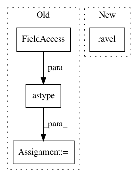

b4bfb0de9c7237c9d404d5565f6d77c21bec5b48,skimage/morphology/watershed.py,,watershed,#Any#Any#Any#Any#Any#Any#,149
Before Change
mask = np.pad(mask, pad_width, mode="constant")
markers = np.pad(markers, pad_width, mode="constant")
c_image = image.astype(np.float64)
c_mask = np.ascontiguousarray(mask, dtype=np.int8).ravel()
c_output = np.array(markers, dtype=np.int32).ravel()
flat_neighborhood = _compute_neighbors(image, c_connectivity, offset)
marker_locations = np.flatnonzero(markers).astype(np.int32)
image_strides = np.array(image.strides, dtype=np.int32) // image.itemsize
if len(marker_locations) > 0:
_watershed.watershed(c_image.ravel(),
marker_locations, flat_neighborhood,
c_mask, image_strides, compactness,
c_output)
c_output = c_output.reshape(c_image.shape)[[slice(1, -1, None)] *
image.ndim]
try:
return c_output.astype(markers.dtype)
except:
return c_output
After Change
_watershed.watershed(image.ravel(),
marker_locations, flat_neighborhood,
mask, image_strides, compactness,
output.ravel())
output = crop(output, pad_width, copy=True)
In pattern: SUPERPATTERN
Frequency: 4
Non-data size: 4
Instances
Project Name: scikit-image/scikit-image
Commit Name: b4bfb0de9c7237c9d404d5565f6d77c21bec5b48
Time: 2016-08-24
Author: juan.n@unimelb.edu.au
File Name: skimage/morphology/watershed.py
Class Name:
Method Name: watershed
Project Name: AIRLab-POLIMI/mushroom
Commit Name: 06279f054fcfa03517b1bd51ef156a9182af146f
Time: 2017-06-16
Author: carlo.deramo@gmail.com
File Name: PyPi/utils/parameters.py
Class Name: Parameter
Method Name: __call__
Project Name: AIRLab-POLIMI/mushroom
Commit Name: ca4c92fe1b53086373cfca478560df06b03701d8
Time: 2017-08-28
Author: carlo.deramo@gmail.com
File Name: examples/atari_dqn/convnet.py
Class Name: ConvNet
Method Name: train_on_batch
Project Name: scikit-image/scikit-image
Commit Name: b0b629c6be895dd6b301643daf5a3473ca28a714
Time: 2016-08-24
Author: juan.n@unimelb.edu.au
File Name: skimage/morphology/watershed.py
Class Name:
Method Name: watershed